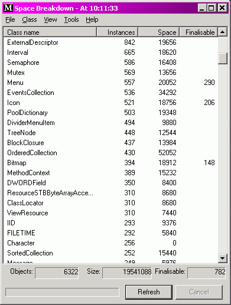
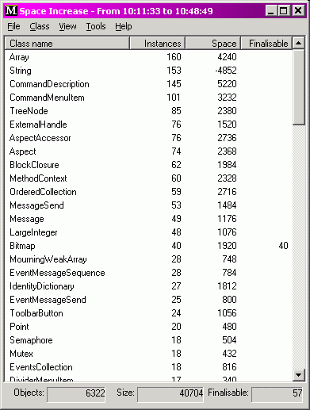
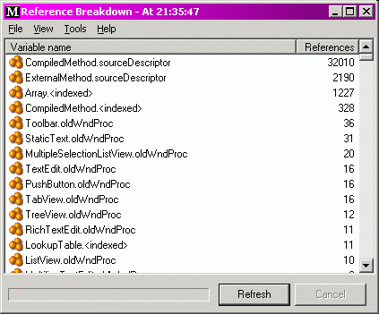

|
Space Breakdown for Dolphin Smalltalk |
|||||||||||||||||||||||||||
|
Space Breakdown |
This package contains two small tools for investigating what objects are taking up space in the image. They are both intended to give a “broad-brush” impression of what is going on, rather than trying to track down details.
The first, Space Breakdown installs itself in the 'Extra Tools' system
folder and menu. Its concept and operation are almost breathtakingly simple.
It scans all the objects in the image (unfortunately, only the ones that derive
from  The the 'View' menu contains options for setting the thresholds that determine which classes will be listed. By default it shows all classes that are not metaclasses and which have at least one instance. The tool can also save its current data to a file (it's stored in CSV format, in case you should wish to import it into a spreadsheet — unlikely, I know…). The main reason for doing this is that you can then, at a later time, use the 'Compare with file' operation (on the 'File' menu) to launch a new list which displays the differences between the two snapshots. (The data has to be written to file, rather than being stored in the image somewhere, or else it would skew the second snapshot). Here's a picture of the difference between two snapshots a few minutes apart.  The second tool, Reference Breakdown is launched from the 'Class' menu of the Space Breakdown. It is launched on one or more selected classes, and scans the image looking to see what objects hold onto references to instances of those classes. In particular, it looks to see which instance variables the references are held in. For instance this screen shot: 
shows a breakdown of references to Packages
|
Copyright © Chris Uppal, 2003-2005